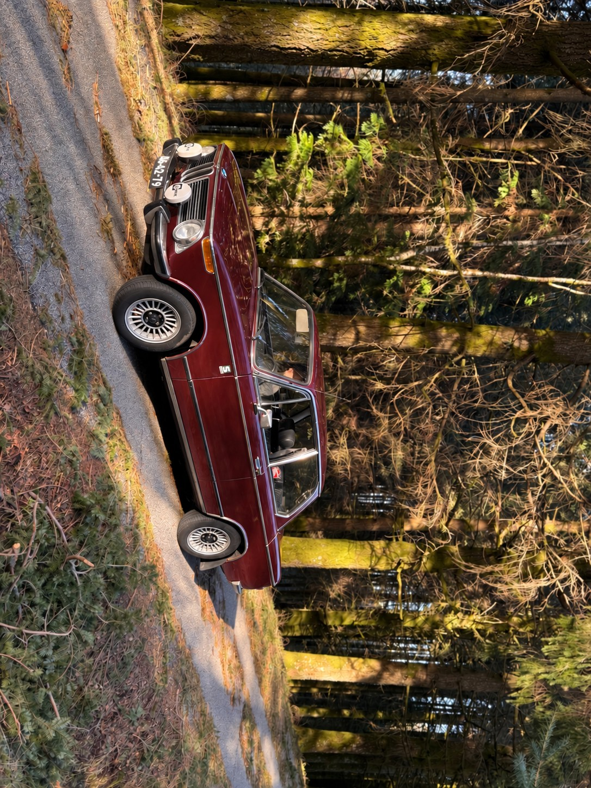
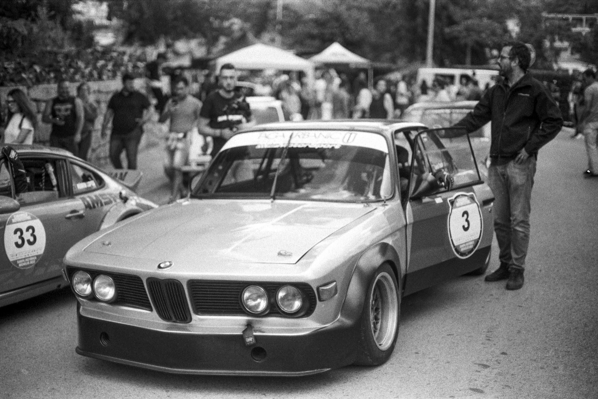
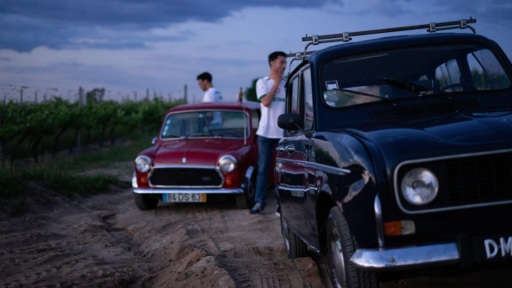
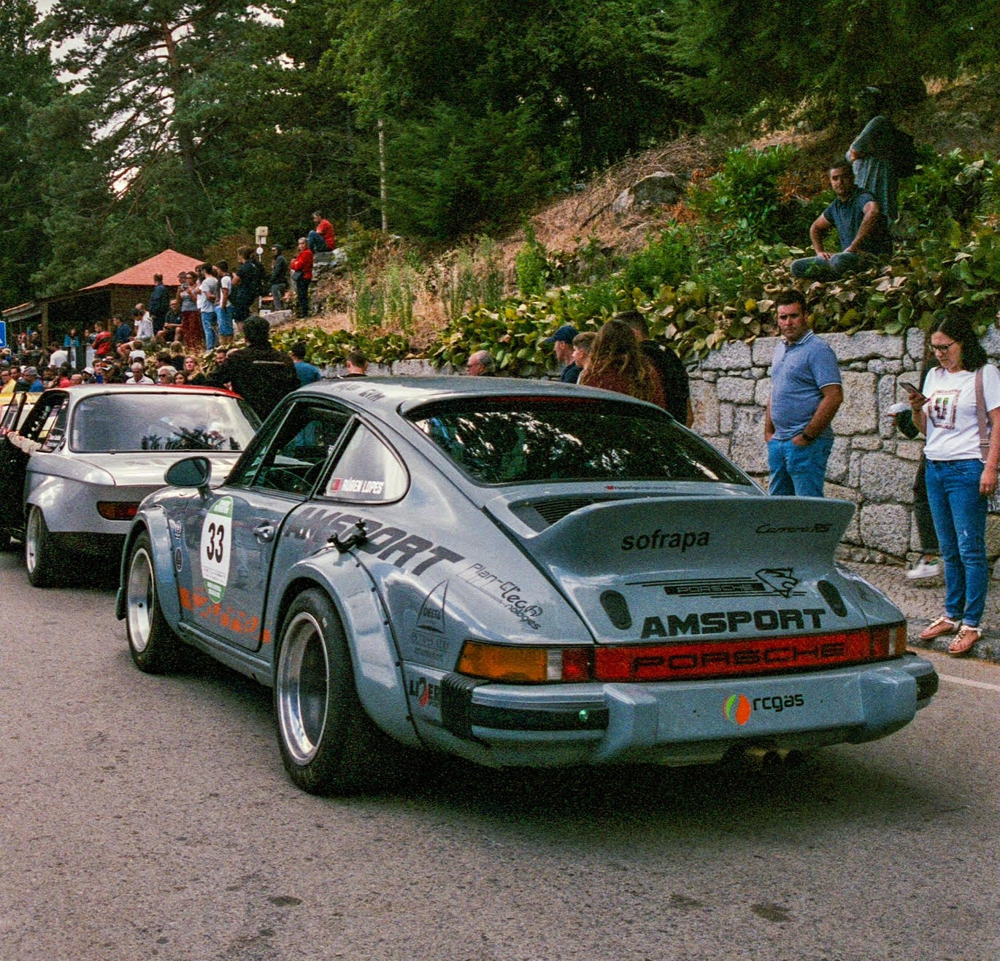
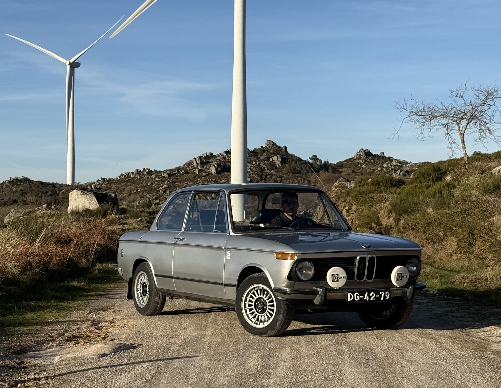
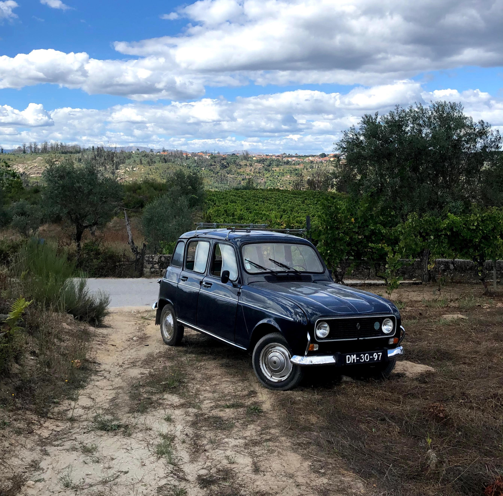
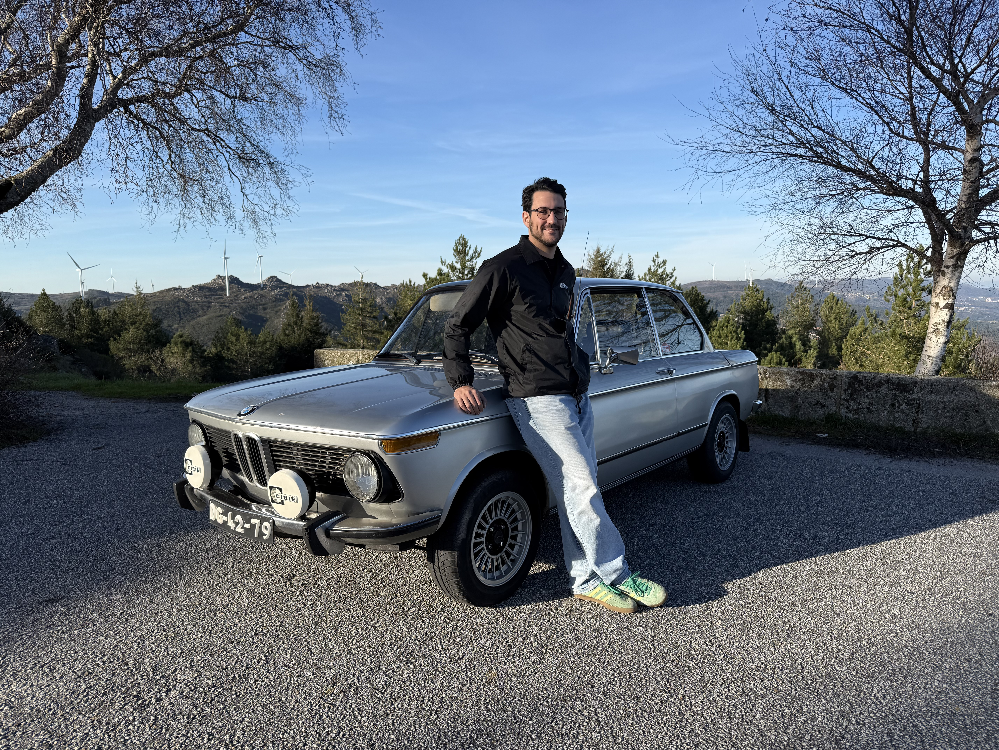

BMW 2002
1971
Escreve aqui a história do carro: como o encontraste, o que restauraste, o que o torna especial para ti.
- Cor
- Málaga
- Motor
- M10, 2000 cc
- Potência
- 105 cv
- Estado
- Original
Uma pequena coleção de carros antigos, conservados e conduzidos. Aqui encontras as fotos, a história e a ficha técnica de cada um.





1971
Escreve aqui a história do carro: como o encontraste, o que restauraste, o que o torna especial para ti.

1978
Escreve aqui a história do carro: como o encontraste, o que restauraste, o que o torna especial para ti.
Conta aqui quem és e como começou a coleção: o primeiro carro, de onde vem o gosto por clássicos, o que procuras num carro antigo.
Podes também falar dos eventos a que vais, dos encontros de clássicos e dos amigos que partilham a mesma paixão.

Queres ver os carros ao vivo, falar de clássicos ou convidar-me para um evento? Escreve-me.
Enviar email